건축산업기사 (2010-03-07 기출문제)
1과목: 건축계획
1. 주거공간을 주 행동에 따라 개인공간, 사회공간, 노동공간 등으로 구분할 경우, 다음 중 사회공간에 속하는 것은?
- 서재
- 부엌
- 식당
- 다용도실
(정답률: 67%)

2. 슈퍼마켓의 매장 계획에 관한 설명 중 옳지 않은 것은?
- 매장의 바닥에 고저차를 두는 것은 변화가 있어 효과적이다.
- 상품 배열 및 구성은 손님이 전 상품을 충분히 보고 다닐 수 있도록 한다.
- 통로의 폭은 1.5m 이상이 바람직하다.
- 매장의 벽면은 요철을 될 수 있는 한 피한다.
(정답률: 80%)
3. 학교 건축계획에 관한 설명 중 옳은 것은?
- 부지 선정에 있어 되도록이면 간선도로에 접해 학생의 통학에 편리하도록 한다.
- 교사의 배치형태 중 분산병렬형은 일조, 통풍 등 교실의 환경 조건이 불균등하다.
- 학교 주변의 놀이터나 공원 등과 격리시켜 학교시설의 이용을 최대화하는 것이 좋다.
- 초등학교 교사는 대지 조건과 경제 조건이 허용하는 한 저층화하는 것이 좋다.
(정답률: 59%)
4. 다음 설명에 알맞은 주택지의 단위는?
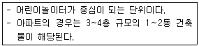
- 근린주구
- 근린분구
- 근린지구
- 인보구
(정답률: 81%)
5. 아파트의 평면 형식 중 홀형(Hall type)에 관한 설명으로 옳지 않은 것은?
- 프라이버시가 양호하다.
- 좁은 대지에서 집약형 주거가 가능하다.
- 통행부 면적이 작아서 건물의 이용도가 높다.
- 편복도형에 비해 주거단위까지의 동선이 길어 통행이 불편하다.
(정답률: 72%)
6. 학교 운영방식에 대한 설명 중 옳지 않은 것은?
- 종합교실형(U형)은 초등학교 저학년에 적합하다.
- 일반교실, 특별교실형(U+V형)은 일반교실이 각 학급에 하나씩 할당되고, 그 외에 특별교실을 갖는다.
- 플래툰형(P형)은 모든 교실이 특별교실로만 구성되어 있으며, 학생의 이동이 많다.
- 달톤형(D형)은 하나의 교과에 출석하는 학생 수가 정해져 있지 않다.
(정답률: 70%)
7. 사무소 건축의 실 단위계획에서 개방식 배치(Open plan)에 대한 설명으로 옳지 않은 것은?
- 공간의 이용성이 높다.
- 소음의 우려가 있다.
- 시설비, 관리비가 많이 든다.
- 독립성이 부족하다.
(정답률: 82%)
8. 사무소 건축에 사용되는 아트리움에 대한 설명 중 옳지 않은 것은?
- 공간적으로는 중간 영역으로서 매개와 결절점의 기능을 수용한다.
- 도심 내의 오피스와 가로 사이에서 도시민을 위한 휴식과 커뮤니케이션 장소로 활용된다.
- 외부환경에 오픈되어 있어 에너지 절약의 효과는 기대할 수 없다.
- 건축물에 조형적, 상징적 독자성(Identity)을 부여한다.
(정답률: 75%)
9. 경사지를 적절하게 이용할 수 있으며 각 주호마다 전용의 정원을 갖는 주택 형식은?
- 테라스 하우스(Terrace house)
- 타워 하우스(Tower house)
- 타운 하우스(Town house)
- 로우 하우스(Row house)
(정답률: 80%)
10. 학교 건축에서 교실의 채광 및 조명에 대한 설명으로 옳지 않은 것은?
- 1방향 채광일 경우 반사광보다는 직사광을 이용하도록 한다.
- 일반적으로 교실에 비치는 빛은 칠판을 향해 있을 때 좌측에서 들어오는 것이 일반적이다.
- 칠판면의 조도가 책상면의 조도보다 높게 한다.
- 교실 채광은 일조시간이 긴 방위를 택한다.
(정답률: 58%)
11. 주택 평면의 지대별 계획으로 옳지 않은 것은?
- 유사한 요소의 것은 공용하도록 한다.
- 시간적 요소가 같은 것끼리 서로 접근시킨다.
- 구성 본위로 유사한 것은 서로 격리시킨다.
- 상호 간 요소가 서로 다른 것끼리는 서로 격리시킨다.
(정답률: 81%)
12. 다음의 주택계획에 대한 설명 중 옳지 않은 것은?
- 거실은 각 실로의 연결 통로로서 가족의 통행에 지장이 없도록 계획한다.
- 식당의 최소면적은 식탁의 크기와 모양, 의자의 배치 상태, 주변 통로와의 여유공간 등에 의하여 결정된다.
- 리빙 키친은 거실과 부엌을 동일 공간에 둔 형식으로 주부의 가사노동이 간편화된다.
- 현관의 크기는 주택의 규모, 가족의 수, 방문객의 예상 수 등을 고려한 출입량에 중점을 두어 계획한다.
(정답률: 71%)
13. 사무소 건축의 코어 형식 중 중심코어(중앙코어)에 대한 설명으로 옳지 않은 것은?
- 고층 건물에 적용이 유리하다.
- 내진구조에 적합하다.
- 바닥면적이 큰 경우에는 적용이 불가능하다.
- 외관이 획일적으로 되기 쉽다.
(정답률: 75%)
14. 사무소 건축에서 건물의 주요 부분을 자기 전용으로 하고 나머지를 대실하는 형식을 무엇이라고 하는가?
- 전용 사무소
- 준전용 사무소
- 준대여 사무소
- 대여 사무소
(정답률: 82%)
15. 상점 계획에 관한 설명 중 옳지 않은 것은?
- 종업원의 동선은 고객의 동선과 교차되지 않게 하는 것이 바람직하며 가급적 보행거리를 길게 한다.
- 소규모 상점에 있어서 계단의 경사가 너무 낮을 경우에는 매장면적이 감소되므로 규모에 알맞은 경사도를 선택할 필요가 있다.
- 조명 방법은 국부조명과 전체조명 두 가지를 같이 사용한다.
- 쇼윈도의 바닥높이는 운동용구, 구두 등의 경우는 낮아도 되지만, 시계, 귀금속 등의 경우는 높게 한다.
(정답률: 70%)
16. 공장 녹지계획의 효용성과 관계가 없는 것은?
- 피로 경감
- 공해 방지
- 작업 의욕의 향상
- 원료 수급과 저장의 원활
(정답률: 69%)
17. 다음 중 공장 건축의 레이아웃(Layout)형식과 적합한 생산 제품의 연결이 가장 부적당한 것은?
- 제품 중심의 레이아웃 - 가정전기제품
- 공정 중심의 레이아웃 - 주문 생산품
- 고정식 레이아웃 - 소규모제품
- 혼성식 레이아웃 - 가정전기 및 주문 생산품
(정답률: 72%)
18. 공동주택의 단위주거 단면 구성에 따른 형식 중 주거단위의 단면을 단층형과 복층형에서 동일층으로 하지 않고 반 층씩 엇나게 하는 형식은?
- 플랫형(Flat type)
- 스킵플로어형(Skip floor type)
- 듀플렉스형(Duplex type)
- 트리플렉스형(Triplex type)
(정답률: 70%)
19. 상점 건축에서 쇼윈도우 유리면의 현휘를 방지하는 방법과 가장 관계가 먼 것은?
- 곡면유리를 사용한다.
- 쇼윈도우의 유리를 경사지게 한다.
- 쇼윈도우 안의 조도를 어둡게 한다.
- 차양을 붙인다.
(정답률: 80%)
20. 다음 설명에 알맞은 상점 진열대의 배치방법은?
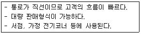
- 굴절배열형
- 직렬배열형
- 환상배열형
- 복합형
(정답률: 86%)
2과목: 건축시공
21. 콘크리트 이어 붓기에 대한 설명 중 옳지 않은 것은?
- 아치이음은 아치(Arch) 축에 직각으로 한다.
- 이어 붓는 위치는 응력이 적은 곳을 택한다.
- 보의 이음은 보의 단부, 즉 기둥 옆에서 이음을 한다.
- 수평이음은 그 면의 먼지나 레이턴스를 제거하고 이음콘크리트를 친다.
(정답률: 55%)
22. 지름 10cm, 높이 20cm인 원주 공시체로 콘크리트의 압축강도를 시험하였더니 180kN에서 파괴되었다면 이 콘크리트의 압축강도는?
- 12.7MPa
- 22.9MPa
- 25.5MPa
- 45.3MPa
(정답률: 47%)
23. 기초의 비탈면 거푸집 면적 계상의 결정 기준이 되는 비탈면 각도는?
- 15°
- 30°
- 45°
- 60°
(정답률: 60%)
24. 다음 중 창호와 창호철물과의 조합을 나타낸 것으로 옳지 않은 것은?
- 미서기창 - 꽂이쇠
- 외여닫이창 - 경첩
- 쌍여닫이창 - 오르내리 꽂이쇠
- 회전창 - 레일, 바퀴
(정답률: 56%)
25. 조적조에서의 대린벽을 가장 잘 설명한 것은?
- 연직하중을 받는 벽
- 수평하중을 받는 벽
- 하중을 받지 않는 벽
- 서로 직각으로 교차되는 내력벽
(정답률: 63%)
26. 방수성이 높은 모르타르로 방수층을 만들어 지하실의 내방수나 소규모인 지붕 방수 등과 같은 비교적 경미한 방수공사에 활용되는 공법은?
- 시멘트액체방수공법
- 아스팔트방수공법
- 실링방수공법
- 시트방수공법
(정답률: 67%)
27. 홈통공사에 대한 설명 중 옳지 않은 것은?
- 보호관은 선홈통에 맞는 철관을 쓰고 높이는 1.5m 정도로 한다.
- 처마홈통의 경사는 보통 1/50 정도로 하는 것이 좋다.
- 일반적으로 골홈통, 처마홈통 등은 선홈통보다 부식이 빠르다.
- 선홈통은 보호관 안에 2cm 정도 꽂아 넣는다.
(정답률: 44%)
28. 다음 중 서로 관계가 없는 것끼리 짝지어진 것은?
- 바이브레이터(Vibrator) - 목공사
- 가이데릭(Guy derrick) - 철골공사
- 그라인더(Grinder) - 미장공사
- 알리데이드(Alidade) - 부지측량
(정답률: 77%)
29. 다음 미장재료 중 수경성이 아닌 것은?
- 시멘트모르타르
- 경석고플라스터
- 돌로마이트플라스터
- 혼합석고플라스터
(정답률: 72%)
30. 철근의 피복에 대하여 옳게 설명한 것은?
- 철근을 피복하는 목적은 내구성 및 내화성을 유지하기 위해서이다.
- 보의 피복두께는 보의 주근의 외면에서 콘크리트 표면까지의 두께를 말한다.
- 기둥의 피복두께는 기둥 주근의 외면에서 콘크리트 표면까지의 두께를 말한다.
- 옥외에 면하는 치장 콘크리트의 피복두께는 특별한 지시가 없을 경우 보통의 피복두께보다 감소시킨다.
(정답률: 68%)
31. 시멘트 보관창고에 대한 설명으로 옳지 않은 것은?
- 주위에 배수도랑을 두고 우수의 침투를 방지한다.
- 바닥높이는 지면으로부터 30cm 이상으로 한다.
- 공기의 유통을 원활히 하기 위해 개구부를 크게 하는 것이 좋다.
- 시멘트의 쌓기 높이는 13포대를 한도로 한다.
(정답률: 74%)
32. 콘크리트에 프리스트레스를 가하는 방식 중 포스트텐션 방식의 공법이 아닌 것은?
- 롱라인 방식
- 매그넬 방식
- 프레시네 방식
- 디위대그 방식
(정답률: 44%)
33. 구조물 위치 전체를 동시에 파내지 않고 측벽이나 주열선 부분만을 먼저 파내고 그 부분의 기초와 지하 구조체를 축조한 다음 중앙부의 나머지 부분을 파내어 지하 구조물을 완성하는 공법은?
- 오픈컷공법(Open cut method)
- 트렌치컷공법(Trench cut method)
- 우물통식공법(Well method)
- 아일랜드컷공법(Island cut method)
(정답률: 57%)
34. 다음 중 수직 양중장비가 아닌 것은?
- 포크리프트(Fork lift)
- 타워크레인(Tower crane)
- 호이스트카(Hoist car)
- 지브크레인(Jib crane)
(정답률: 44%)
35. 미장공사 시 주의할 사항으로 옳지 않은 것은?
- 바탕면은 필요에 따라 물축임을 한다.
- 한 공정의 바름두께는 바닥을 제외하고 6mm 이하로 한다.
- 초벌바름 후 물기가 마르기 전에 곧바로 재벌바름, 정벌바름을 한다.
- 바탕면에는 부착이 잘 되게 면을 거칠게 해둔다.
(정답률: 65%)
36. 흙막이공법 중 수평버팀대의 설치작업순서가 올바른 것은?
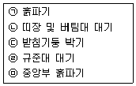
- ㉠ → ㉣ → ㉡ → ㉢ → ㉤
- ㉠ → ㉣ → ㉢ → ㉡ → ㉤
- ㉣ → ㉠ → ㉤ → ㉢ → ㉡
- ㉣ → ㉠ → ㉢ → ㉡ → ㉤
(정답률: 55%)
37. 블록쌓기에서 블록의 하루 쌓기 높이는 최대 얼마 이하로 하는가?
- 1.0m
- 1.5m
- 2.0m
- 2.5m
(정답률: 66%)
38. 목재의 부패 조건에 대한 설명 중 옳지 않은 것은?
- 습도 80% 이상에서는 부패균의 발육이 정지된다.
- 부패균은 4℃ 이하에서는 거의 사멸된다.
- 대다수의 균은 CO2량이 80% 이상이 되면 발육이 정지된다.
- 완전히 수중에 잠겨진 목재는 부패되지 않는다.
(정답률: 46%)
39. 유리를 연화점에 가깝게(500~600℃) 가열해두고 양면에 냉기를 불어 넣어 급랭시켜 강도를 높인 안전유리의 일종은?
- 망입유리
- 강화유리
- 형판유리
- 중공복층유리
(정답률: 73%)
40. 방수공사에 사용되는 아스팔트의 양부를 판정하는 데 필요한 사항과 가장 거리가 먼 것은?
- 침입도
- 연화점
- 마모도
- 감온성
(정답률: 62%)
3과목: 건축구조
41. 그림과 같이 색칠된 BOX형 단면의 x축에 대한 단면2차모멘트는?(단, 단면의 두께 t는 2cm로 4변 모두 일정하다.)
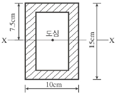
- 2,095cm4
- 2,147cm4
- 2,264cm4
- 2,336cm4
(정답률: 53%)
42. 기초 형식의 선정에 대한 설명으로 옳지 않은 것은?
- 구조성능, 시공성, 경제성 등을 검토하여 합리적으로 기초 형식을 선정하여야 한다.
- 기초는 상부구조의 규모, 형상, 구조, 강성 등을 함께 고려해야 하고, 대지의 상황 및 지반의 조건에 적합하며, 유해한 장애가 생기지 않아야 한다.
- 동일 구조물의 기초에서는 이종형식 기초의 병용을 원칙으로 한다.
- 기초 형식의 선정 시 부지 주변에 미치는 영향을 충분히 고려하여야 하며 또한 장래 인접대지에 건설되는 구조물과 그 시공에 의한 영향까지도 함께 고려하는 것이 바람직하다.
(정답률: 72%)
43. 기둥 또는 벽의 힘을 지중에 전달하기 위하여 기초가 펼쳐진 부분을 의미하는 것은?
- 지정
- 푸팅
- 피어
- 잡석
(정답률: 48%)
44. 그림과 같은 내민보에서 B지점의 반력과 그 방향은?
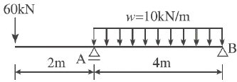
- 20kN(상향)
- 20kN(하향)
- 10kN(상향)
- 10kN(하향)
(정답률: 21%)
45. 강도설계법에서 철근콘크리트구조물의 전단력과 비틀림모멘트에 대한 강도감소계수는?
- 0.85
- 0.75
- 0.65
- 0.55
(정답률: 51%)
46. 강도설계법에서 D19 인장 이형철근의 기본정착길이로 옳은 것은?(단, 보통중량콘크리트 fck=21MPa, fy=400MPa이다.)
- 652.4mm
- 703.2mm
- 852.8mm
- 995.1mm
(정답률: 42%)
47. 휨모멘트를 받는 부재의 콘크리트 압축연단의 극한변형률은 얼마로 간주하는가?
- 0.001
- 0.002
- 0.003
- 0.0025
(정답률: 63%)
48. 다음 중 정정보가 아닌 것은?
- 단순보
- 캔틸레버보
- 양단고정보
- 겔버보
(정답률: 37%)
49. 그림과 같은 정방형 단주의 E점에 압축력 100kN이 작용할때 B점에 발생되는 응력의 크기는?
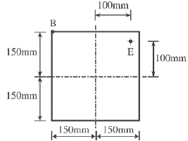
- -1.11MPa
- 1.11MPa
- -2.22MPa
- 2.22MPa
(정답률: 39%)
50. 그림과 같은 구조물의 부정정 차수는?
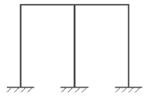
- 3차 부정정
- 4차 부정정
- 5차 부정정
- 6차 부정정
(정답률: 55%)
51. 장방형 단면의 철근콘크리트기둥에서 띠철근의 주요 역할은?
- 철근과 콘크리트의 부착력 증가
- 콘크리트의 압축강도 증가
- 주근 단면의 보충
- 주근의 좌굴을 방지
(정답률: 60%)
52. 강도설계법에 관한 설명 중 옳지 않은 것은?
- 탄성이론하에서 이루어진 설계법이다.
- 강도감소계수는 시공오차, 약산오차 등의 기술적인 면을 고려한 안전계수이다.
- 하중계수는 규정된 허용하중이 초과될지도 모를 가능성을 예측한 것이다.
- 서로 다른 재료의 특성을 설계에 합리적으로 반영시키기 어렵다.
(정답률: 38%)
53. 그림과 같은 단순보에서 최대 처짐은?(단, I=단면2차모멘트, E=탄성계수)
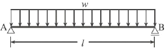
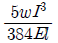
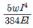
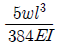
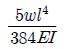
(정답률: 50%)
54. 그림과 같은 켄틸레버보에서 A단의 휨모멘트는?
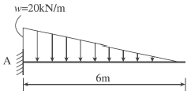
- -60kNㆍm
- -80kNㆍm
- -100kNㆍm
- -120kNㆍm
(정답률: 47%)
55. 그림과 같은 단면의 강재에 100kN의 하중을 작용시켰을 때 5mm가 늘어났다. 이때의 탄성계수는?
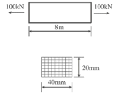
- 180,000MPa
- 200,000MPa
- 210,000MPa
- 240,000MPa
(정답률: 42%)
56. 강도설계법 규준에 의한 처짐을 계산하지 않는 경우의 1방향 슬래브 최소두께 규정으로 옳지 않은 것은?(단, L은 지간의 길이이며 보통콘크리트와 400MPa 철근 사용)
- 단순지지 슬래브 : L/20
- 1단 연속 슬래브 : L/24
- 양단 연속 슬래브 : L/30
- 캔틸레버 슬래브 : L/10
(정답률: 58%)
57. 부재 스팬 6m, 부재 외측부터 슬래브 중심까지의 거리 4m인 그림과 같은 반T형 단면 슬래브의 유효폭(B) 값으로 옳은 것은?
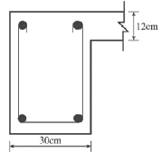
- 50cm
- 80cm
- 102cm
- 400cm
(정답률: 44%)
58. 강도설계법에 의한 철근콘크리트 단근 장방형 보의 휨 설계시 등가응력블록의 깊이 a를 구하는 식은?(단, b는 보의 폭)
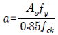
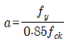
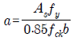
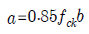
(정답률: 66%)
59. 강도설계법에 의한 철근콘크리트 부재 설계시 겹침이음을 하지 않아야 하는 철근은?
- D25를 초과하는 철근
- D29를 초과하는 철근
- D22를 초과하는 철근
- D35를 초과하는 철근
(정답률: 73%)
60. 그림과 같은 단순보의 A지점의 반력과 그 방향은?
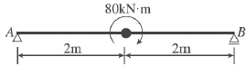
- 40kN(상향)
- 40kN(하향)
- 20kN(하향)
- 20kN(상향)
(정답률: 39%)
4과목: 건축설비
61. 우수수평관의 관경을 결정하는 직접적인 요소가 아닌 것은?
- 지붕의 수평투영면적
- 지붕의 기울기
- 배관의 기울기
- 최대강우량
(정답률: 45%)
62. 다음 중 소방시설에 속하지 않는 것은?
- 스프링클러설비
- 소화기구
- 폭기설비
- 연결살수설비
(정답률: 64%)
63. 전선에 과전류가 흐르면 자동적으로 회로를 차단시켜 안전을 도모하는 기기는?
- 서킷브레이커
- 콘덴서
- 3로스위치
- 단로기
(정답률: 59%)
64. 다음의 펌프 전양정(H)의 산출공식에서 오른쪽 항의 구성요소가 아닌 것은?
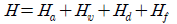
- 관로의 전손실수두
- 펌프 구경
- 압력수두
- 실양정
(정답률: 41%)
65. 다음 설명에 알맞은 보일러는?
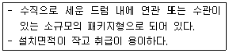
- 관류보일러
- 입형보일러
- 수관보일러
- 주철제보일러
(정답률: 59%)
66. 그림과 같은 광도가 1cd인 점광원에서 1m와 2m 떨어진 a, b 수직면상의 조도는?(단, 단위는 lx)
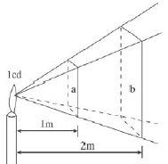
- a면 : 1, b면 : 1/2
- a면 : 1, b면 : 1/4
- a면 : 1/2, 1
- a면 : 1/4, 1
(정답률: 50%)
67. 저항 5Ω, 15Ω이 직렬로 접속된 회로에 5A의 전류가 흐를 때, 인가한 전압은?
- 200V
- 150V
- 100V
- 50V
(정답률: 62%)
68. 피보호물을 연속된 망상도체나 금속판으로 싸는 방법으로 뇌격을 받더라도 내부에 전위차가 발생하지 않으므로 건물이나 내부에 있는 사람에게 위해를 주지 않는 피뢰설비 방식은?
- 돌침방식(보통보호)
- 가공지선방식(간이보호)
- 케이지방식(완전보호)
- 수평도체방식(증강보호)
(정답률: 70%)
69. 다음 중 단위의 연결이 옳지 않은 것은?
- 열전도율 : W/mㆍK
- 상대습도 : %
- 엔탈피 : kg/kg
- 손실열량 : W
(정답률: 63%)
70. 금속관배선공사에 대한 설명 중 옳지 않은 것은?
- 금속관배선은 절연전선을 사용한다.
- 고압, 저압, 통신설비 등에 널리 사용된다.
- 옥내의 점검 불가능한 은폐장소로서 습기가 많은 장소에도 시공이 가능하다.
- 열적영향이나 기계적 외상을 받기 쉬운 곳에서는 시공이 불가능하다.
(정답률: 65%)
71. 다음 설명에 알맞은 간선의 배선방식은?
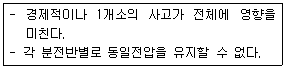
- 평행식
- 루프식
- 나뭇가지식
- 나뭇가지평행식
(정답률: 63%)
72. 중앙식 공기조화기에서 전열교환기를 설치하는 가장 주된 이유는?
- 소음제거
- 에너지절약
- 공기오염 방지
- 백연현상 방지
(정답률: 64%)
73. 증기난방과 비교한 온수난방의 특징으로 옳지 않은 것은?
- 소요방열면적이 작아 설비비가 낮다.
- 열용량이 커서 예열시간이 길게 소요된다.
- 한랭지에서 장시간 운전정지 시 동결우려가 있다.
- 방열면의 온도가 낮아서 비교적 높은 쾌감도를 얻을 수 있다.
(정답률: 61%)
74. 실내온도 20℃, 외기온도 5℃일 때 콘크리트 벽체의 열관류율이 0.7W/m2ᆞK이다. 이 벽체의 단위면적당 관류에 의한 손실열량은?
- 3.5W
- 8.75W
- 10.5W
- 14W
(정답률: 58%)
75. 가스배관에 대한 설명 중 옳지 않은 것은?
- 외부로부터 부식과 손상이 될 우려가 있는 장소를 피한다.
- 온도변화를 받지 않는 장소에 설치하는 것이 좋다.
- 배관재료는 강관이나 나사접합이 주로 사용된다.
- 건물의 주요구조부를 관통하여 설치한다.
(정답률: 77%)
76. 급수설비에 사용되는 각종 예상급수량에 관한 설명 중 옳지 않은 것은?
- 시간평균 예상급수량은 고가수조용량 등의 산정에 이용된다.
- 순간최대 예상급수량은 펌프직송방식의 송수량을 결정하는 경우에 이용된다.
- 시간최대 예상급수량은 최대부하시간대의 급수량으로서, 일반적으로 시간평균 예상급수량의 10~12배 정도이다.
- 학교나 영화관 등과 같이 휴식시간 등에 단시간 사용이 집중되는 곳에서는 급수설비 설계 시 시간최대 예상급수량과 순간최대 예상 급수량을 고려할 필요가 있다.
(정답률: 47%)
77. 2개 이상의 엘보를 사용하여 나사회전을 이용해서 신축을 흡수하는 신축이음쇠는?
- 루프형
- 스위블형
- 슬리브형
- 벨로즈형
(정답률: 64%)
78. 난방부하를 줄이기 위한 방법으로 옳지 않은 것은?
- 적절한 난방설계용 외기조건을 채용한다.
- 적절한 실내 온, 습도 조건을 채용한다.
- 침입외기량을 줄인다.
- 내부발열요소를 없앤다.
(정답률: 65%)
79. 배수수평지관의 도피통기관의 관경은 그것을 접속하는 배수수평지관의 관경의 최소 얼마 이상이어야 하는가?
- 1/2
- 1
- 1/3
- 1/4
(정답률: 50%)
80. 목적에 따른 접지의 분류 중 주로 고, 저압의 혼촉에 의한 재해를 예방하기 위해 변압기 2차 측에 접지하는 것은?
- 기기접지
- 계통접지
- 통신용 접지
- 뇌해방지용 접지
(정답률: 51%)
5과목: 건축관계법규
81. 다음 중 허가대상건축물이라 하더라도 건축신고를 함으로써 건축허가를 받은 것으로 보는 경우에 속하지 않는 것은?
- 연면적이 300m2 미만이고 4층 미만인 건축물의 대수선
- 바닥면적의 합계가 85m2 이내의 증축
- 바닥면적의 합계가 85m2 이내의 개축
- 연면적의 합계가 100m2 이하인 건축물의 건축
(정답률: 66%)
82. 다음의 직통계단의 설치와 관련된 기준 내용 중 ( ) 안에 알맞은 것은?
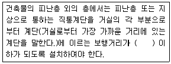
- 30m
- 35m
- 45m
- 60m
(정답률: 72%)
83. 건축선의 지정에 관한 설명으로 옳지 않은 것은?
- 담장은 원칙상 건축선의 수직면을 넘어서는 안 된다.
- 도로면으로부터 높이 3m에 있는 창문은 열고 닫을 때 건축선의 수직면을 넘는 구조로 할 수 있다.
- 도로와 접한 부분에서 건축선은 대지와 도로의 경계선으로 하는 것이 원칙이다.
- 건축물은 원칙상 건축선의 수직면을 넘어서는 안 된다.
(정답률: 63%)
84. 비상용 승강기에 대한 기준 내용으로 옳지 않은 것은?
- 비상용 승강기의 승강장은 각 층의 내부와 연결될 수 있도록 하되, 그 출입구에는 갑종방화문을 설치한다.
- 높이 31m를 넘는 각 층의 바닥면적의 합계가 600m2인 건축물에는 비상용 승강기를 설치하지 않는다.
- 비상용 승강기의 승강장의 바닥면적은 비상용 승강기 1대에 대하여6m2 이상으로 한다.
- 비상용 승강기의 승강로는 당해 건축물의 다른 부분과 내화구조로 구획하여야 한다.
(정답률: 71%)
85. 기계식주차장에 설치하여야 하는 정류장의 확보기준으로 옳은 것은?
- 주차대수가 20대를 초과하는 매 20대마다 1대분
- 주차대수가 20대를 초과하는 매 30대마다 1대분
- 주차대수가 30대를 초과하는 매 20대마다 1대분
- 주차대수가 30대를 초과하는 매 30대마다 1대분
(정답률: 59%)
86. 다음의 노외주차장의 구조 및 설비에 관한 기준 내용 중( ) 안에 알맞은 것은?
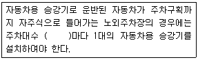
- 10대
- 15대
- 20대
- 30대
(정답률: 50%)
87. 다음 중 거실의 용도에 따른 채광기준상 바닥에서 85센티미터의 높이에 있는 수평면의 조도기준이 가장 높아야 하는 거실의 용도는?
- 일반사무
- 회의
- 독서
- 검사
(정답률: 54%)
88. 다음 중 다중이용건축물에 해당되지 않는 것은?
- 판매시설의 용도로 쓰는 바닥면적의 합계가 5,000m2 이상인 건축물
- 문화 및 집회시설(동, 식물원 제외)의 용도로 쓰이는 바닥면적의 합계가 5,000m2 이상인 건축물
- 의료시설 중 종합병원의 용도로 쓰는 바닥면적의 합계가 5,000m2 이상인 건축물
- 숙박시설 중 일반숙박시설의 용도로 쓰는 바닥면적의 합계가 5,000m2 이상인 건축물
(정답률: 50%)
89. 다음 중 건축법상 운수시설에 속하지 않는 것은?
- 여객자동차터미널
- 하역장
- 철도시설
- 항만시설
(정답률: 66%)
90. 방화벽의 구조기준 내용으로 옳지 않은 것은?
- 내화구조로서 홀로 설 수 있는 구조일 것
- 방화벽의 양쪽 끝과 위쪽 끝을 건축물의 외벽면 및 지붕면으로부터 0.5미터 이상 튀어나오게 할 것
- 방화벽에 설치하는 출입문에는 을종방화문을 설치할 것
- 방화벽에 설치하는 출입문의 너비 및 높이는 각각 2.5미터 이하로 할 것
(정답률: 62%)
91. 공연장의 개별 관람석의 바닥면적이 330m2인 경우, 개별 관람석에 설치한 출구의 유효너비의 합계는 최소 얼마 이상이어야 하는가?
- 1.5m
- 1.8m
- 2.4m
- 3.0m
(정답률: 28%)
92. 다음 중 노외주차장의 출구 및 입구를 설치할 수 있는 장소에 해당되는 것은?
- 횡단보도에서 4m 떨어진 도로의 부분
- 너비 3m인 도로
- 종단구배가 10%인 도로
- 유치원출입구로부터 15m 떨어진 도로의 부분
(정답률: 55%)
93. 보도와 차도의 구분이 없는 주거지역의 도로에서 주차단위구획의 너비 및 길이기준은?
- 너비 2.0미터 이상, 길이 5.0미터 이상
- 너비 1.7미터 이상, 길이 4.5미터 이상
- 너비 2.0미터 이상, 길이 6.0미터 이상
- 너비 2.3미터 이상, 길이 5.0미터 이상
(정답률: 40%)
94. 다음은 지하층의 정의에 관한 기준 내용이다. ( ) 안에 알맞은 것은?
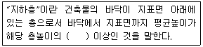
- 4분의 1
- 3분의 1
- 2분의 1
- 3분의 2
(정답률: 81%)
95. 노외주차장의 구조 및 설비기준에 따라 노외주차장의 출입구를 설치할 경우 출입구의 최소너비는?
- 3.5미터
- 5.0미터
- 5.5미터
- 6.0미터
(정답률: 58%)
96. 건축물의 건축을 함에 있어 용적률의 경우 건축법에서 허용되는 오차의 범위 기준은?
- 0.5퍼센트 이내(연면적 20m2를 초과할 수 없다.)
- 0.5퍼센트 이내(연면적 30m2를 초과할 수 없다.)
- 1퍼센트 이내(연면적 20m2를 초과할 수 없다.)
- 1퍼센트 이내(연면적 30m2를 초과할 수 없다.)
(정답률: 45%)
97. 부설주차장의 총주차대수 규모가 8대 이하인 자주식주차장에서 주차형식에 따른 주차단위구획과 접하여 있는 차로의 너비기준이 옳지 않은 것은?
- 평행주차 : 3미터 이상
- 직각주차 : 6미터 이상
- 교차주차 : 3.5미터 이상
- 45도 대향주차 : 3미터 이상
(정답률: 45%)
98. 일조 등의 확보를 위하여 정북방향의 인접대지경계선으로부터의 거리에 따라 건축물의 높이를 기준 이하로 하여야 하는 대상 지역에 해당하는 것은?
- 일반상업지역
- 중심상업지역
- 준주거지역
- 일반주거지역
(정답률: 49%)
99. 대형 기계식주차장에 있어서 출입구 전면에 확보하여야 할 전면공지의 크기기준으로 옳은 것은?
- 너비 8.1미터 이상, 길이 9.5미터 이상
- 너비 8.7미터 이상, 길이 9.8미터 이상
- 너비 10미터 이상, 길이 11미터 이상
- 너비 10.3미터 이상, 길이 11미터 이상
(정답률: 62%)
100. 다음 중 건축물의 건축허가를 신청하는 경우 에너지절약계획서를 제출하여야 하는 대상 건축물에 속하지 않는 것은?
- 운동시설 중 실내수영장으로서 당해 용도에 사용되는 바닥면적의 합계가 5백제곱미터인 건축물
- 업무시설로서 당해 용도에 사용되는 바닥면적의 합계가 3천제곱미터인 건축물
- 식물원으로서 당해 용도에 사용되는 바닥면적의 합계가 2천제곱미터인 건축물
- 제1종 근린생활시설 중 목욕장으로서 당해 용도에 사용되는 바닥면적의 합계가 1천제곱미터인 건축물
(정답률: 39%)